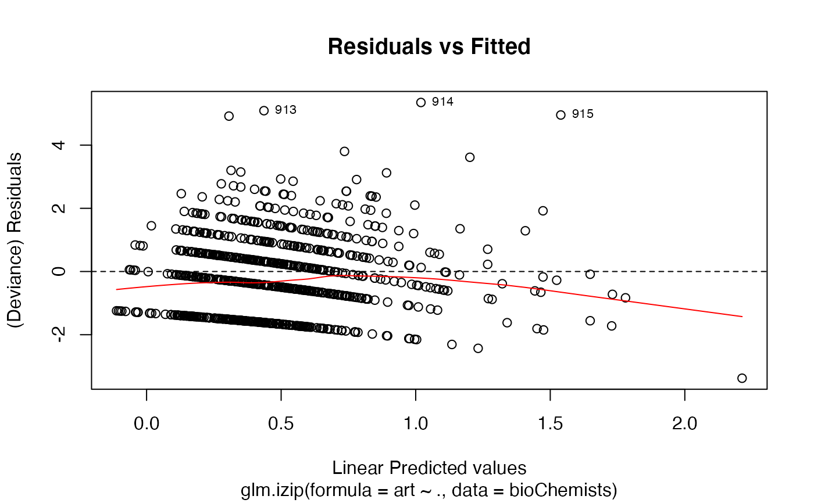
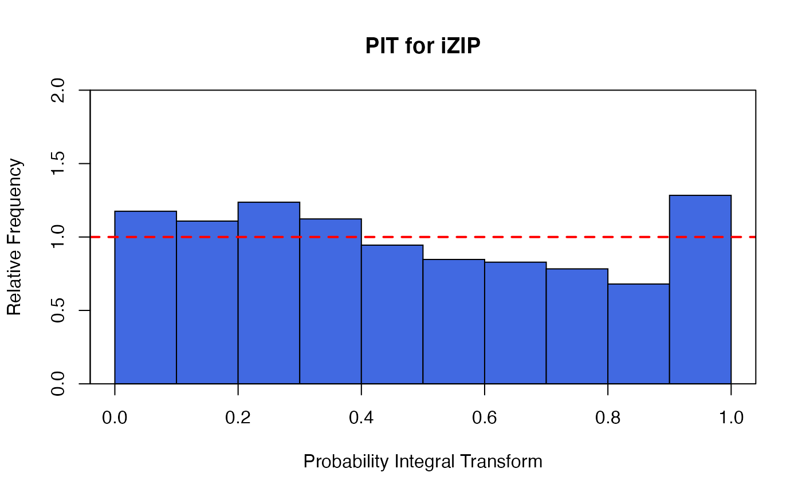
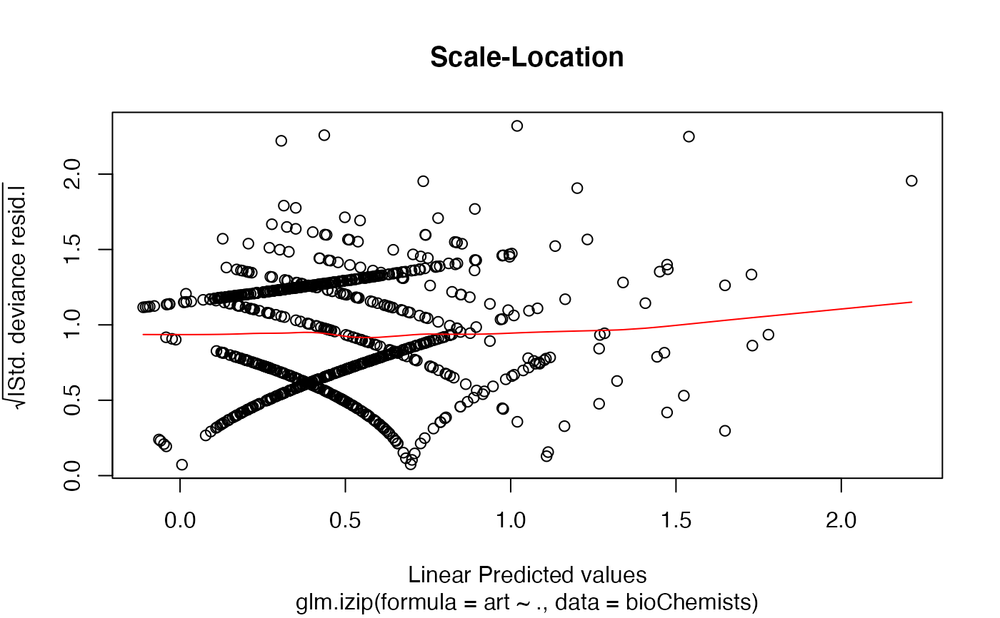
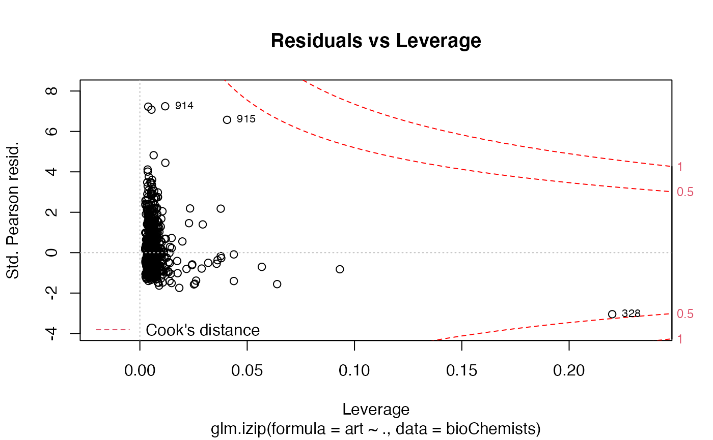
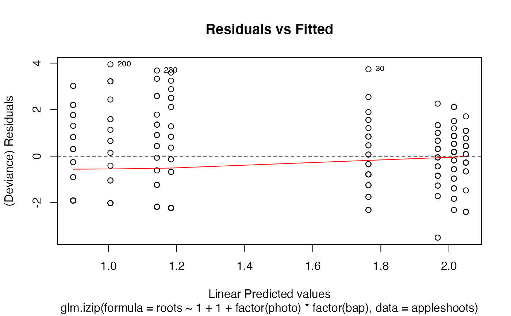
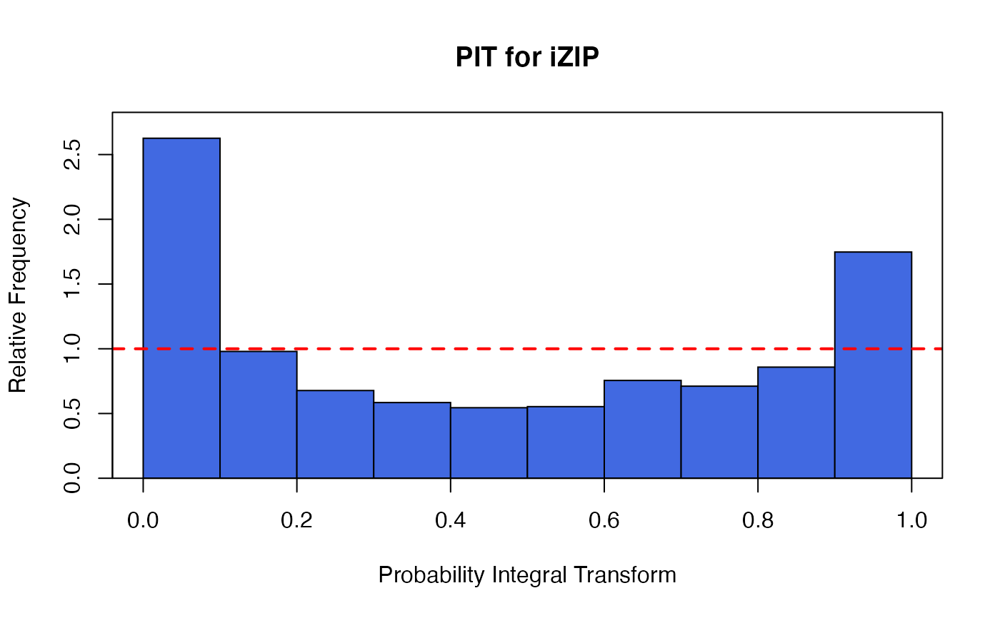
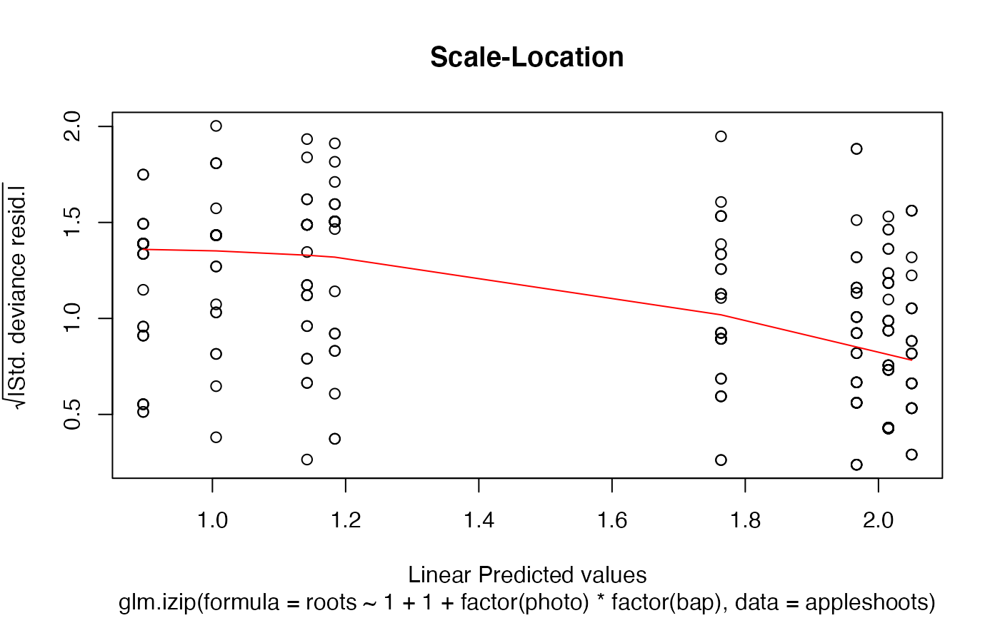
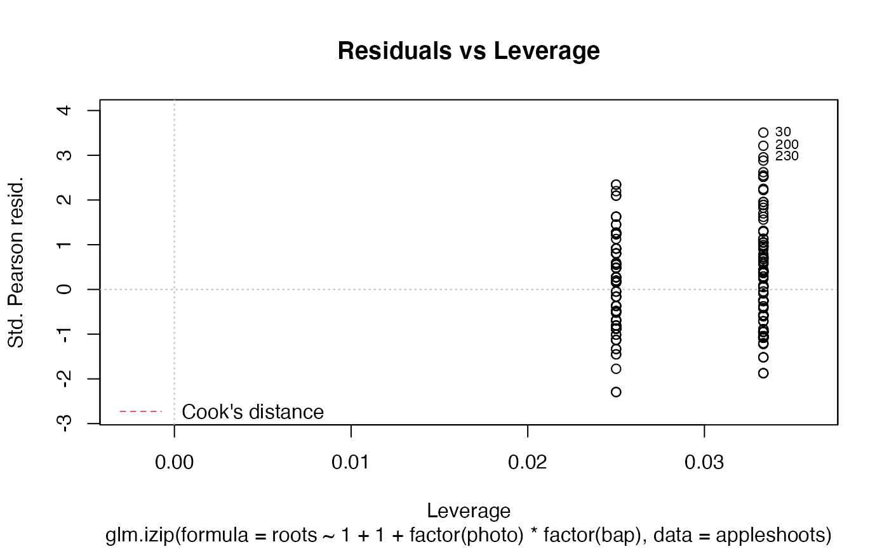

The function glm.izip is used to fit an interpretable zero-inflated Poisson
generalized linear model with a log-link.
glm.izip( formula, data, ref.lambda = NULL, offset = NULL, subset, contrasts = NULL, na.action )
| formula | an object of class 'formula': a symbolic description of the model to be fitted to the mean via log-link. |
|---|---|
| data | an optional data frame containing the variables in the model |
| ref.lambda | the rate of a Poisson distribution that baseline zero-inflated odds based on. |
| offset | this can be used to specify an a priori known component to be included |
| subset | an optional vector specifying a subset of observations to be used in the fitting process. |
| contrasts | optional lists. See the contrasts.arg of model.matrix.default. |
| na.action | a function which indicates what should happen when the data contain NAs. The default is set by the na.action setting of options, and is na.fail if that is unset. The ‘factory-fresh’ default is na.omit. Another possible value is NULL, no action. Value na.exclude can be useful. |
A fitted model object of class izip similar to one obtained from glm
or glm.nb.
The function summary (i.e., summary.izip) can be used to obtain
and print a summary of the results.
The functions plot (i.e., plot.izip) and
autoplot can be used to produce a range
of diagnostic plots.
The generic assessor functions coef (i.e., coef.izip),
logLik (i.e., logLik.izip)
fitted (i.e., fitted.izip),
nobs (i.e., nobs.izip),
AIC (i.e., AIC.izip) and
residuals (i.e., residuals.izip)
can be used to extract various useful features of the value
returned by glm.izip.
An object class 'izip' is a list containing at least the following components:
a named vector of coefficients
approximate standard errors (using observed rather than expected information) for mean coefficients
the response residuals (i.e., observed-fitted)
the fitted mean values
the numeric rank of the fitted linear model for mean
the linear fit for mean on log scale
the residuals degrees of freedom
the residual degrees of freedom for the null model
The deviance for the null model. The null model will include only the intercept.
The residual deviance of the model
the y vector used.
the model matrix for mean
the model frame for regression
the matched call
the formula supplied for regression
the terms object used for regression
the data argument
the offset vector used
Fit an interpretable zero-inflated Poisson regression using maximum likelihood estimation.
The model is
$$Y_i ~ ZIP_{\nu}(\mu_i | \lambda = \lambda_{ref}),$$
where
$$E(Y_i) = \mu_i = exp(x_i^T \beta),$$
\(x_i\) are some covariates.
\(\nu \ge 0\) is the baseline zero-inflated odds relative to a Poisson with rate \(\lambda_{ref}\).
Huang, A. and Fung, T. (2020). Zero-inflated Poisson exponential families, with applications to time-series modelling of counts.
## article production by graduate students in ## biochemistry PhD programs of Long (1990, 1997) data(bioChemists) M_bioChem <- glm.izip(art ~ ., data = bioChemists) summary(M_bioChem)#> #> Call: glm.izip(formula = art ~ ., data = bioChemists) #> #> Deviance Residuals: #> Min 1Q Median 3Q Max #> -3.377 -1.423 -0.338 0.520 5.349 #> #> Linear Model Coefficients: #> Estimate Std.Err Z value Pr(>|z|) #> (Intercept) 0.324567 0.118344 2.743 0.006096 ** #> femWomen -0.228623 0.062988 -3.630 0.000284 *** #> marMarried 0.158891 0.070602 2.251 0.024417 * #> kid5 -0.189543 0.046299 -4.094 4.24e-05 *** #> phd 0.010118 0.030253 0.334 0.738041 #> ment 0.024687 0.002175 11.352 < 2e-16 *** #> --- #> Signif. codes: 0 ‘***’ 0.001 ‘**’ 0.01 ‘*’ 0.05 ‘.’ 0.1 ‘ ’ 1 #> #> (Baseline zero-inflation odds for iZIP estimated to be 0.2861) #> #> (The baseline Poisson rate for iZIP is set at 1.693) #> #> #> Null deviance: 1542.8 on 914 degrees of freedom #> Residual deviance: 1405.5 on 909 degrees of freedom #> #> AIC: 3240.321 #>## Root counts for propagated columnar apple shoots of ## Ridout, Hinde & Demetrio (1998). data(appleshoots) M_shoots <- glm.izip(roots ~ 1 + 1 + factor(photo) * factor(bap), data = appleshoots ) summary(M_shoots)#> #> Call: glm.izip(formula = roots ~ 1 + 1 + factor(photo) * factor(bap), #> data = appleshoots) #> #> Deviance Residuals: #> Min 1Q Median 3Q Max #> -3.5028 -1.9069 -0.2788 0.8393 3.9440 #> #> Linear Model Coefficients: #> Estimate Std.Err Z value Pr(>|z|) #> (Intercept) 1.7636 0.1014 17.398 < 2e-16 *** #> factor(photo)16 -0.5798 0.2000 -2.900 0.00374 ** #> factor(bap)4.4 0.2862 0.1253 2.285 0.02232 * #> factor(bap)8.8 0.2513 0.1211 2.076 0.03790 * #> factor(bap)17.6 0.2035 0.1231 1.654 0.09819 . #> factor(photo)16:factor(bap)4.4 -0.4645 0.2895 -1.604 0.10863 #> factor(photo)16:factor(bap)8.8 -0.2930 0.2757 -1.063 0.28780 #> factor(photo)16:factor(bap)17.6 -0.4912 0.2797 -1.756 0.07902 . #> --- #> Signif. codes: 0 ‘***’ 0.001 ‘**’ 0.01 ‘*’ 0.05 ‘.’ 0.1 ‘ ’ 1 #> #> (Baseline zero-inflation odds for iZIP estimated to be 0.6592) #> #> (The baseline Poisson rate for iZIP is set at 5.059) #> #> #> Null deviance: 628.20 on 269 degrees of freedom #> Residual deviance: 503.72 on 262 degrees of freedom #> #> AIC: 1283.312 #>